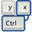

Tango
Diese Seite stellt eine Sammlung einiger Icons aus dem Tango Projekt  bereit, die auf jeder Seite genutzt werden können. Die Icons können frei und ohne Einschränkungen ("Public Domain") genutzt werden .
bereit, die auf jeder Seite genutzt werden können. Die Icons können frei und ohne Einschränkungen ("Public Domain") genutzt werden .
Eingebunden werden sie normalerweise über
[[Bild(Wiki/Icons/Tango/Name_des_Icons.png,Wunschgröße,Ausrichtung)]]
Beispiel: [[Bild(Wiki/Icons/Tango/accessories-text-editor.png, 14,)]] ergibt
| Dokument | |||
| Icon | Dateiname | Icon | Dateiname |
| Tango/accessories-text-editor.png | Tango/bookmark-new.png | ||
| Tango/calc.png | Tango/contact-new.png | ||
| Tango/document-new.png | Tango/document-open.png | ||
| Tango/document-print.png | Tango/document-properties.png | ||
| Tango/document-save-as.png | Tango/document-save.png | ||
| Tango/edit-clear.png | Tango/edit-copy.png | ||
| Tango/edit-cut.png | Tango/edit-delete.png | ||
| Tango/edit-find.png | Tango/edit-paste.png | ||
| Tango/edit-select-all.png | Tango/file-manager.png | ||
| Tango/folder-new.png | Tango/folder.png | ||
| Tango/folder-remote.png | Tango/folder-saved-search.png | ||
| Tango/text-editor.png | Tango/user-home.png | ||
| Tango/video-display.png | Tango/info.png | ||
| Dateityp | |||
| Icon | Dateiname | Icon | Dateiname |
| Tango/audio-x-generic.png | Tango/image-x-generic.png | ||
| Tango/text-x-generic.png | Tango/video-x-generic.png | ||
| Navigation | |||
| Icon | Dateiname | Icon | Dateiname |
| Tango/go-bottom.png | Tango/go-down.png | ||
| Tango/go-first.png | Tango/go-home.png | ||
| Tango/go-jump.png | Tango/go-last.png | ||
| Tango/go-next.png | Tango/go-previous.png | ||
| Tango/go-top.png | Tango/go-up.png | ||
| Internet | |||
| Icon | Dateiname | Icon | Dateiname |
| Tango/internet-mail.png | Tango/internet-news-reader.png | ||
| Tango/internet-group-chat.png | |||
| Netzwerk | |||
| Icon | Dateiname | Icon | Dateiname |
| Tango/network-error.png | Tango/network-idle.png | ||
| Tango/network-offline.png | Tango/network-receive.png | ||
| Tango/network-transmit-receive.png | Tango/network-transmit.png | ||
| Tango/network-wired.png | Tango/network-wireless-encrypted.png | ||
| Tango/network-wireless.png | |||
| Listen | |||
| Icon | Dateiname | Icon | Dateiname |
| Tango/list-add.png | Tango/list-remove.png | ||
| Multimedia | |||
| Icon | Dateiname | Icon | Dateiname |
| Tango/media-eject.png | Tango/media-playback-pause.png | ||
| Tango/media-playback-start.png |  | Tango/media-playback-stop.png | |
| Tango/media-record.png | Tango/media-seek-backward.png | ||
| Tango/media-seek-forward.png | Tango/media-skip-backward.png | ||
| Tango/media-skip-forward.png | |||
| System | |||
| Icon | Dateiname | Icon | Dateiname |
| Tango/process-stop.png | Tango/system-lock-screen.png | ||
| Tango/system-log-out.png | Tango/system-search.png | ||
| Tango/system-shutdown.png | Tango/user-desktop.png | ||
| Tango/user-trash.png | |||
| Ansichtsmodi | |||
| Icon | Dateiname | Icon | Dateiname |
| Tango/view-fullscreen.png | Tango/view-refresh.png | ||
| Tango/zoom-best-fit.png |  | Tango/zoom-in.png | |
| Tango/zoom-original.png | Tango/zoom-out.png | ||
| Diverses | |||
| Icon | Dateiname | Icon | Dateiname |
| Tango/camera-photo.png | Tango/camera-video.png | ||
| Tango/computer.png | Tango/drive-harddisk.png | ||
| Tango/drive-optical.png | Tango/drive-removable-media.png | ||
| Tango/input-gaming.png | Tango/input-keyboard.png | ||
| Tango/input-mouse.png | Tango/media-flash.png | ||
| Tango/media-floppy.png | Tango/media-optical.png | ||
| Tango/multimedia-player.png | Tango/printer.png | ||
| Tango/audio-card.png | Tango/audio-input-microphone.png | ||
| Tango/battery.png | Tango/office-calendar.png | ||
| Tango/help-browser.png | Tango/preferences-desktop.png | ||
| Tango/preferences-desktop-locale.png | Tango/preferences-desktop-accessibility.png | ||
| Tango/preferences-desktop-assistive-technology.png |  | Tango/preferences-desktop-font.png | |
|  | Tango/preferences-desktop-keyboard-shortcuts.png | Tango/preferences-desktop-theme.png | |
| Tango/preferences-desktop-wallpaper.png | Tango/emblem-favorite.png | ||
| Dialoge | |||
| Icon | Dateiname | Icon | Dateiname |
| Tango/dialog-ok.png | Tango/dialog-cancel.png | ||
| Tango/dialog-information.png | Tango/dialog-warning.png | ||
| Tango/dialog-error.png | Tango/X.png | ||
- Erstellt mit Inyoka
-
 2004 – 2017 ubuntuusers.de • Einige Rechte vorbehalten
2004 – 2017 ubuntuusers.de • Einige Rechte vorbehalten
Lizenz • Kontakt • Datenschutz • Impressum • Serverstatus -
Serverhousing gespendet von